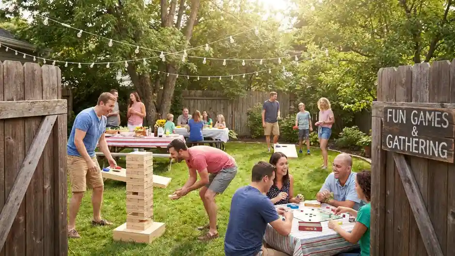

5 Rekomendasi Tempat Outbound Terbaik di Batu Malang

Daftar Isi Mapan
▼Kota wisata Batu, Malang, telah lama dikenal sebagai destinasi favorit untuk kegiatan luar ruangan atau outdoor. Udaranya yang sejuk dan kontur alamnya yang pegunungan memberikan atmosfer berbeda bagi para peserta. Berikut ini adalah 5 rekomendasi tempat outbound di Batu dengan fasilitas terbaik:
1. Coban Rondo
Berada di area perbukitan dengan ikon air terjun setinggi 84 meter yang mempesona. Coban Rondo memiliki area camping ground yang sangat luas dan cocok untuk kegiatan corporate gathering dengan jumlah peserta masif.
2. Selecta
Selain terkenal dengan taman bunganya yang indah, area Selecta juga menyimpan spot-spot lapang yang sering digunakan untuk kegiatan fun game dan team building dengan suasana yang cukup rindang dan asri.
3. Kaliwatu Rafting
Jika tim Anda menyukai tantangan, berpadu antara outbound darat dan air, Kaliwatu adalah pilihan tepat. Tempat ini menyediakan fasilitas pengarungan sungai yang aman bagi pemula sekalipun.

4. Apple Sun Learning Centre
Sektor swasta ini dirancang khusus untuk memenuhi kebutuhan pelatihan tim. Fasilitasnya sangat menunjang skenario high rope maupun low rope untuk melatih ketangkasan para peserta.
5. Kampung Lumbung
Bagi yang mencari perpaduan antara nuansa pedesaan, budaya, dan keseruan aktivitas alam, Kampung Lumbung menawarkan paket yang sedikit berbeda dan memberikan pengalaman lebih hangat serta tradisional.
Kesimpulan
Mana yang terbaik untuk Anda? Tentu tergantung pada tujuan acara, usia peserta, dan anggaran. Tim Batu Adventure dengan senang hati akan membantu Anda menentukan lokasi dan merancangkan acara yang paling sesuai.
FAQ (Pertanyaan yang Sering Diajukan)
Beberapa lokasi menyediakan opsi sewa lahan saja, namun dengan memesan dalam paket bersama Batu Adventure, Anda akan menghemat banyak sekali biaya per-kepala.
Kaliwatu Rafting dan Apple Sun cukup dekat dan dapat diakses mudah, sementara Coban Rondo dan Selecta agak sedikit melereng ke lereng pegunungan.